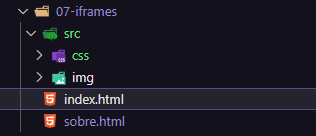
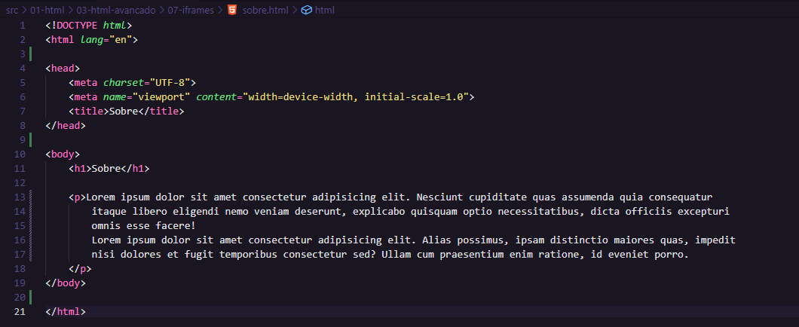
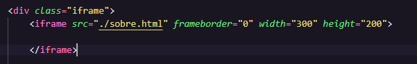

O 'iframe' é um quadro dentro do nosso projeto. Ele pode puxar tanto um página interna quanto externa. Primeiro vamos ver como puxar uma página interna para o nosso index, por exemplo.



Para fazer um iframe externo, e aqui usaremos o Youtube, é da seguinte forma.
O atributos "width" e "height" podemos estilizar pelo CSS se quiser.
O atributo "src" é o link do vídeo no Youtube.
O atributo "frameborder" é para tirar as bodas igual visto antes.
O atributo "allow" é específico do Youtube que vai dizer quais controles aparecem no nosso vídeo. Preciso pesquisar mais sobre isso.
O atributo "allowfullscreen" é para mostrar o botão de full screen no vídeo, assim podemos ver em tela cheia se quiser.
Feito isso, aqui está nosso vídeo.